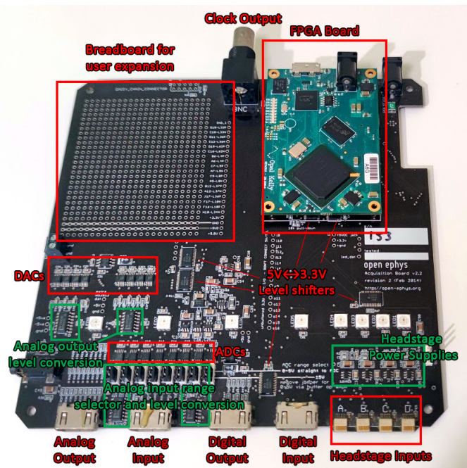

<!DOCTYPE html>

<html>
  <head>
    <meta charset="utf-8" />
    <meta name="viewport" content="width=device-width, initial-scale=1.0" /><meta name="generator" content="Docutils 0.17.1: http://docutils.sourceforge.net/" />

    <title>Acquisition Boards &#8212; SkillHub 0.0.0 documentation</title>
    
    <link href="../_static/styles/theme.css?digest=1999514e3f237ded88cf" rel="stylesheet">
<link href="../_static/styles/pydata-sphinx-theme.css?digest=1999514e3f237ded88cf" rel="stylesheet">
  
    
    <link rel="stylesheet"
      href="../_static/vendor/fontawesome/5.13.0/css/all.min.css">
    <link rel="preload" as="font" type="font/woff2" crossorigin
      href="../_static/vendor/fontawesome/5.13.0/webfonts/fa-solid-900.woff2">
    <link rel="preload" as="font" type="font/woff2" crossorigin
      href="../_static/vendor/fontawesome/5.13.0/webfonts/fa-brands-400.woff2">
  
    
      
  
    
    <link rel="stylesheet" href="../_static/theme_overrides.css" type="text/css" />
    <link rel="stylesheet" href="../_static/sphinx_tabs/tabs.css" type="text/css" />
    
    <link rel="preload" as="script" href="../_static/scripts/pydata-sphinx-theme.js?digest=1999514e3f237ded88cf">
  
    <script data-url_root="../" id="documentation_options" src="../_static/documentation_options.js"></script>
    <script src="../_static/jquery.js"></script>
    <script src="../_static/underscore.js"></script>
    <script src="../_static/doctools.js"></script>
    <link rel="index" title="Index" href="../genindex.html" />
    <link rel="search" title="Search" href="../search.html" />
    <meta name="viewport" content="width=device-width, initial-scale=1" />
    <meta name="docsearch:language" content="None">
    

    <!-- Google Analytics -->
    
  </head>
  <body data-spy="scroll" data-target="#bd-toc-nav" data-offset="80">
    
    <div class="container-fluid" id="banner"></div>

    
    <nav class="navbar navbar-light navbar-expand-lg bg-light fixed-top bd-navbar" id="navbar-main"><div class="container-xl">

  <div id="navbar-start">
    
    
<a class="navbar-brand" href="../index.html">
<p class="title">SkillHub</p>
</a>

    
  </div>

  <button class="navbar-toggler" type="button" data-toggle="collapse" data-target="#navbar-collapsible" aria-controls="navbar-collapsible" aria-expanded="false" aria-label="Toggle navigation">
    <span class="navbar-toggler-icon"></span>
  </button>

  
  <div id="navbar-collapsible" class="col-lg-9 collapse navbar-collapse">
    <div id="navbar-center" class="mr-auto">
      
      <div class="navbar-center-item">
        <ul id="navbar-main-elements" class="navbar-nav">
    <li class="toctree-l1 nav-item">
 <a class="reference internal nav-link" href="../indexbasics.html">
  Electrophysiology Acquisition
 </a>
</li>

<li class="toctree-l1 nav-item">
 <a class="reference internal nav-link" href="../Contact/disclaimer_terms_conditions.html">
  Terms and Conditions
 </a>
</li>

    
</ul>
      </div>
      
    </div>

    <div id="navbar-end">
      
      <div class="navbar-end-item">
        <ul id="navbar-icon-links" class="navbar-nav" aria-label="Icon Links">
        <li class="nav-item">
          <a class="nav-link" href="https://github.com/ahleighton/skillhub" rel="noopener" target="_blank" title="GitHub"><span><i class="fab fa-github-square"></i></span>
            <label class="sr-only">GitHub</label></a>
        </li>
      </ul>
      </div>
      
    </div>
  </div>
</div>
    </nav>
    

    <div class="container-xl">
      <div class="row">
          
            
            <!-- Only show if we have sidebars configured, else just a small margin  -->
            <div class="col-12 col-md-3 bd-sidebar">
              <div class="sidebar-start-items"><form class="bd-search d-flex align-items-center" action="../search.html" method="get">
  <i class="icon fas fa-search"></i>
  <input type="search" class="form-control" name="q" id="search-input" placeholder="Search the docs ..." aria-label="Search the docs ..." autocomplete="off" >
</form><nav class="bd-links" id="bd-docs-nav" aria-label="Main navigation">
  <div class="bd-toc-item active">
    
  </div>
</nav>
              </div>
              <div class="sidebar-end-items">
              </div>
            </div>
            
          

          
          <div class="d-none d-xl-block col-xl-2 bd-toc">
            
              
              <div class="toc-item">
                
<div class="tocsection onthispage pt-5 pb-3">
    <i class="fas fa-list"></i> On this page
</div>

<nav id="bd-toc-nav">
    <ul class="visible nav section-nav flex-column">
 <li class="toc-h2 nav-item toc-entry">
  <a class="reference internal nav-link" href="#what-do-acquisition-boards-do">
   What do acquisition boards do
  </a>
 </li>
 <li class="toc-h2 nav-item toc-entry">
  <a class="reference internal nav-link" href="#what-is-inside">
   What is inside
  </a>
 </li>
</ul>

</nav>
              </div>
              
              <div class="toc-item">
                
              </div>
              
            
          </div>
          

          
          
            
          
          <main class="col-12 col-md-9 col-xl-7 py-md-5 pl-md-5 pr-md-4 bd-content" role="main">
              
              <div>
                
  <section id="acquisition-boards">
<span id="refacboard"></span><h1>Acquisition Boards<a class="headerlink" href="#acquisition-boards" title="Permalink to this headline">¶</a></h1>
<section id="what-do-acquisition-boards-do">
<h2>What do acquisition boards do<a class="headerlink" href="#what-do-acquisition-boards-do" title="Permalink to this headline">¶</a></h2>
</section>
<section id="what-is-inside">
<h2>What is inside<a class="headerlink" href="#what-is-inside" title="Permalink to this headline">¶</a></h2>
<p>The heart of the Open Ephys Acquisition Board is an FPGA (Field Programmable Gate Array).</p>

<p>Acquiring with high channel counts at high sampling speeds places heavy requirements on the hardware of the acquisition system. An acquisition system must be able to drive analog-to-digital converters and sensors, pack data and send it to a computer with very strict timing constraints.</p>
<p>Classical, sequential MicroController Units can only execute one command at a time. Performing multiple, synchronized actions can therefore only be approximated by running steps sequentially at high speed. This processor speed is limited by power and thermal considerations (S. H. Fuller and L. I. Millett, 2011).
Parallel computing allows separate and simultaneous acquisition, packing and transmission of data from each sensor.  Various devices are able to perform parallel operations, but are otherwise unsuitable for electrophysiology acquisition. Multicore processors lack enough parallelism, as they can only perform one simultaneous action per core. GPUs can run hundreds of parallel operations, but while they are widely used for processing they
lack the hardware resources needed for driving sensors. Application-Specific Integrated Circuits (ASICs) are custom hardware devices created for a specific task, so they can achieve the desired parallelism with very high performance.
However, they lack flexibility; once produced, and change requires a new fabrication batch.
Field-Programmable Gate Arrays (FPGAs) are integrated circuits featuring configurable digital electronics. By uploading a configuration file called a ‘bit file’, FPGAs can be configured to act as any digital circuit. The circuits configured into an FPGA can run in parallel and independently, unlike microprocessors which run a single programme step-by-step.</p>
<p>offer the parallel capabilities of an ASIC, albeit with slightly reduced performance, but with the ability of being reconfigured at no cost. <a class="reference external" href="https://learn.sparkfun.com/tutorials/how-does-an-fpga-work?_ga=2.78097236.1328161175.1645203335-838473938.1635861406">Sparkfun has an excellent introduction on FPGAs</a>.</p>
<p><em>Adapted from the PhD Thesis of Aarón Cuevas</em></p>
<p>S. H. Fuller and L. I. Millett, Computing performance: Game over or next level? Computer, vol. 44, pp. 3138, Jan. 2011. doi: 10.1109/MC.
2011.15</p>
</section>
</section>


              </div>
              
              
              <!-- Previous / next buttons -->
<div class='prev-next-area'>
</div>
              
          </main>
          

      </div>
    </div>
  
    <script src="../_static/scripts/pydata-sphinx-theme.js?digest=1999514e3f237ded88cf"></script>
  <footer class="footer mt-5 mt-md-0">
  <div class="container">
    
    <div class="footer-item">
      <p class="copyright">
    &copy; Copyright 2020-2022, Open Ephys &amp; Contributors.<br>
</p>
    </div>
    
    <div class="footer-item">
      <p class="sphinx-version">
Created using <a href="http://sphinx-doc.org/">Sphinx</a> 4.4.0.<br>
</p>
    </div>
    
  </div>
</footer>
  </body>
</html>